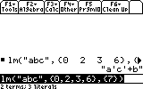
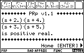

Download Area
Electrical Engineering
Please, do not spread these programs other sites without permission of the authors.
Incidence Matrices
| Software: InMat |
Last updated: March 13, 1999. |
Author's name: Roberto Perez-Franco |
Description: Work with impedance networks using incidence matrices. |
Specifications: Written in TI Basic to run in TI-89. Documentation: Brief. |
Download it! Compressed in .zip format. |
Bode and Nyquist Plots
| Software: BodeX |
Last updated: November, 2000. |
Author's name: 92Brothers |
Description: The best Bode plot program. |
Specifications: Written in TI Basic to run in TI-89 and TI-92+. Documentation: Included in .pdf. |
Download it! Compressed in .zip format. |
| Software: Nyquist Plot |
|
Last updated: 1999. |
|
Author's name: Michael Rans |
|
Description: To make Nyquist plots. |
|
Specifications: Written in TI Basic to run in TI-89. Documentation: Brief. |
|
Download it! Compressed in .zip format. |
Circuit Drawing
| Software: CktDraw 2.00 |
Last updated: November 7, 1999. |
Author's name: Edwin Guevara |
Description: This is a circuit drawing program, with a lot of different elements. |
Specifications: Written in TI Basic to run in TI-89. Documentation: Brief. |
Download it! Compressed in .zip format. |
Signals
| Software: Signal89 2.31 |
Last updated: March 28, 2000. |
Author's name: Lennart Isaksson |
Description: This kit includes Convolution 1-D, Convolution 2-D, FFT, IFFT, DFT, IDFT, DCT, IDCT, Correlation, Matrix Flip, Matrix FlipUD, Matrix FlipLR, Matrix Rot90, Matrix Round and more. |
Specifications: Written in TI Basic to run in TI-89. Documentation: In .pdf format. |
Download it! Compressed in .zip format. |
Logic Expressions
| Software: LM v1.0 |
Last updated: January 2001 |
Author's name: Alex Astashyn |
 |
Specifications: For TI-89. Documentation: Simple, in .txt |
Download it! Compressed in .zip format. |
| Software: Logic |
Last updated: 1998? |
Author's name: FloSoft, and ported to Ti89 by Reinhard Hofmann |
Description: Program to simplify switching functions. It allows entries as expressions and as minterms. |
Specifications: Written in TI Basic to run in TI-89. Documentation: Simple, in .txt |
Download it! Compressed in .zip format. |
Fields
| Software: EMag |
Last updated: February 21, 1999. |
Author's name: Nevin McChesney |
Description: Emag can convert between Cartessian, cylindrical, and spherical
coordinates. |
Specifications: Written in TI Basic to run in TI-89. Documentation: Included in .txt format |
Download it! Compressed in .zip format. |
| Software: GCD |
Last updated: June 1st, 2000. |
Author's name: Jay Myers |
Description: Functions for Divergence, Gradient and Curl. |
Specifications: Written in TI Basic to run in TI-89. Documentation: Complete, in .doc format, included. |
Download it! Compressed in .zip format. |
| Software: Curl Div Gra |
Last updated: February 24, 1999. |
Author's name: Roberto Perez-Franco |
Description: Functions for Divergence, Gradient and Curl. |
Specifications: Written in TI Basic to run in TI-89. Documentation: Brief. |
Download it! Compressed in .zip format. |
Control
| Software: Functions and Programs |
Last updated: December 17, 1999. |
Author's name: Chadd L. Easterday (HomePage) |
Description: Different functions and programs useful for Control's course. |
Specifications: Written in TI Basic to run in TI-92+. Documentation: Included in .doc format. |
Download it! Compressed in .zip format. |
Miscelaneous
| Software: PRp test v1.1 |
Last updated: December 17, 1999. |
Author's name: Daniele Martini |
 Description: Positive real property test is a little program written for users who attend advanced courses in electric circuits and have to deal with positive real functions. Its purpose is to test the positive real property of rational functions. This program makes use of the Talbot criterion to evaluate functions. |
Specifications: Written in TI Basic to run in TI-89. Documentation: Included in .txt and .pdf formats. |
Download it! Compressed in .zip format. |
| Software: State Space |
Last updated: October 10, 1999. |
Author's name: Charles Ware |
Description: State space of discrete systems. Also, check out his Financial Functions. |
Specifications: Written in TI Basic to run in TI-89. Documentation: Brief. |
Download it! Compressed in .zip format. |
| Software: VDiv |
Last updated: August 1, 1999. |
Author's name: Doug Burkett |
Description: This program, vdiv(), solves for values of two resistors in a voltage divider such that the output voltage most closely matches the desired voltage. The significant feature of the program is that the resistors are chosen from a list of available resistors, not from all standard values. This means that the best divider can be made from resistors on hand. |
Specifications: Written in TI Basic to run in TI-92Plus. Documentation: Brief. |
Download it! Compressed in .zip format. |